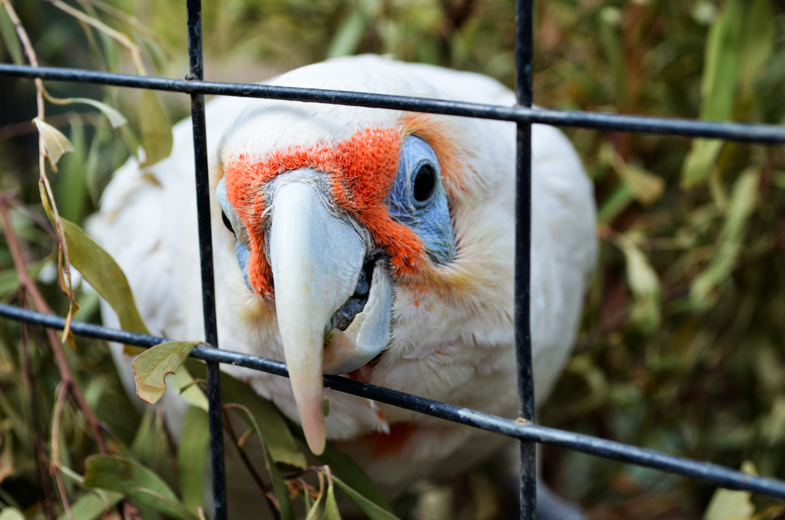

Adoption Center
Miguel the dog

Miguel is a 2 year old pug/shih tzu mix breed who was brought in when his previous owners left him behind. He was found in terrible shape, fleas, matted, hair and very wary of human interaction. But, thanks to our efforts we have managed to rehabilitate him and give him another chance to find a forever home to take him in. He is a joyful and excitable pup who is searching for new better owners to take him in, he has all his shots, and has been neutered.
Kirsten the cat

Kirsten was a stray that was brought in. She has been spayed and is estimated to be around 5 or so years old. We suspect she had a litter before joining us, but had found no traces of the kittens she may have had while out in the streets. She was given proper care when she was brought in. She is a warm and affectionate kitten who is in need of a new home to live out her time in and a new family to bond with.
Tim The bird
Tim was a family bird that was brought in by the previous owner who could no longer care for his pal tim. Time was brought in by us and has been given the utmost care, so far he is friendly and talkative. We are attempting to bring this lovely little bird into a new home. We know he's worth it.
Services
We offer some quality services for you and your darling animals to better your lives and ease your worries. Some services we offer here include:
- Grooming/Washing
- Pet sitting
- veterinary clinic
We hold here a fantastic Grooming/Washing for even the messiest furs and fleece. We charge based from type of animal and type of grooming/washing. Our base rates for medium sized dogs and cats is $25 for basic grooming, $35 for washing included.
We offer to watch and care for the friends and loved ones that are left in our care. We play, feed, and watch over them as you spend your time with other business and cant properly watch over your pets and animals. We only care for domesticated animals (not including farm animals or animals larger than "large" sized).
Although not as equipped, nor as advanced as a tried and true clinic, we do offer basic check up and prescription services to better care for your pets health and wellness, as well as offer plenty of vitamins and other fillers to improve your animals well-being.(Issues such as poisoning, injuries, or disease should be better sent to, more advanced clinics that are equipped to deal with such scenarios).